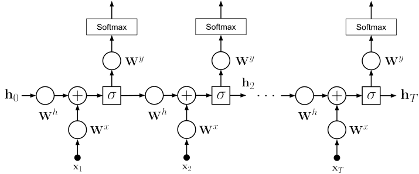
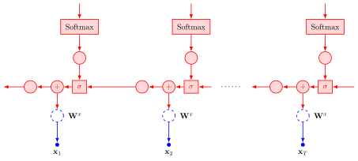

Sequence Models Day 3
Today’s assignment
Today’s class will be focused on advanced deep learning concepts, mainly Recurrent Neural Networks (RNNs). In the first day we saw how the chain-rule allowed us to compute gradients for arbitrary computation graphs. Today we will see that we can still do this for more complex models like Recurrent Neural Networks (RNNs). In these models we will input data in different points of the graph, which will correspond to different time instants. The key factor to consider is that, for a fixed number of time steps, this is still a computation graph and all what we saw on the first day applies with no need for extra math.
Although RNNs have been largely superseded by Transformer-based models for most NLP tasks, understanding them remains important: they introduce the core ideas of sequence modeling, backpropagation through time, and the vanishing gradient problem that motivated many subsequent architectural innovations, including Transformers.
If you managed to finish the previous day completely you should aim at finishing this as well. If you still have pending exercises from the first day e.g. the Pytorch part. It is recommended that you try to solve them first and then continue with this day.
Recurrent Neural Networks: Backpropagation Through Time
Feed Forward Networks Unfolded in Time

We have seen already Feed Forward (FF) networks. These networks are ill suited to learn variable length patterns since they only accept inputs of a fixed size. In order to learn sequences using neural networks, we need therefore to define some architecture that is able to process variable length inputs. Recurrent Neural Networks (RNNs) solve this problem by unfolding the computation graph in time. In other words, the network is replicated as many times as it is necessary to cover the sequence to be modeled. In order to model the sequence one or more connections across different time instants are created. This allows the network to have a memory in time and thus capture complex patterns in sequences. In the simplest model, depicted in Fig. 1, and detailed in Algorithm [algo:rnnforward], a RNN is created by replicating a single hidden-layer FF network \(T\) times and passing the intermediate hidden variable across different steps. The strength of the connection is determined by the weight matrix \(\mathbf{W}_h\)
Backpropagating through Unfolded Networks

It is important to note that there is no formal changes needed to apply backpropagation to RNNs. It concerns applying the chain rule just as it happened with FFs. It is however useful to consider the following properties of derivatives, which are not relevant when dealing with FFs
When two variables are summed up in the forward-pass, the error is backpropagated to each of the summand sub-graphs
When unfolding in \(T\) steps the same parameters will be copied \(T\) times. All updates for each copy are summed up to compute the total gradient.
Despite the lack of formal changes, the fact that we backpropagate an error over the length of the entire sequence often leads to numerical problems. The problem of vanishing and exploding gradients are a well known limitation. A number of solutions are used to mitigate this issue. One simple, yet inelegant, method is clipping the gradients to a fixed threshold. Another solution is to resort to more complex RNN models that are able to better handle long range dependencies and are less sensitive to this phenomenon, most notably the Long Short-Term Memory (LSTM) (Hochreiter and Schmidhuber 1997) and the Gated Recurrent Unit (GRU) (Cho et al. 2014), both of which use gating mechanisms to control information flow across time steps. It is important to bear in mind, however, that all RNNs still use backpropagation as seen in the previous day, although it is often referred as Backpropagation through time.
The difficulty of training RNNs over long sequences was one of the key motivations behind the Transformer architecture (Vaswani et al. 2017), which replaces recurrence with self-attention and therefore has no path-length dependence on sequence length during gradient flow.
Convince yourself that a RNN is just an FF unfolded in time. Complete
the backpropagation() method in NumpyRNN class in
lxmls/deep_learning/numpy_models/rnn.py and compare it with
lxmls/deep_learning/numpy/models/mlp.py.
To work with RNNs we will use the Part-of-speech data-set.
# Load Part-of-Speech data
from lxmls.readers.pos_corpus import PostagCorpusData
data = PostagCorpusData() Load and configure the NumpyRNN. Remember to use reload if you want to modify the code inside the rnns module
# Instantiate RNN
from lxmls.deep_learning.numpy_models.rnn import NumpyRNN
model = NumpyRNN(
input_size=data.input_size,
embedding_size=50,
hidden_size=20,
output_size=data.output_size,
learning_rate=0.1
)As in the case of the feed-forward networks you can use the following setup to test step by step the implementation of the gradients. First compute the cost variation for the variation of a single weight
from lxmls.deep_learning.rnn import get_rnn_parameter_handlers, get_rnn_loss_range
# Get functions to get and set values of a particular weight of the model
get_parameter, set_parameter = get_rnn_parameter_handlers(
layer_index=-1,
row=0,
column=0
)
# Get batch of data
batch = data.batches('train', batch_size=1)[0]
# Get loss and weight value
current_loss = model.cross_entropy_loss(batch['input'], batch['output'])
current_weight = get_parameter(model.parameters)
# Get range of values of the weight and loss around current parameters values
weight_range, loss_range = get_rnn_loss_range(model, get_parameter, set_parameter, batch)then compute the desired gradient from your implementation
# Get the gradient value for that weight
gradients = model.backpropagation(batch['input'], batch['output'])
current_gradient = get_parameter(gradients)and finally call matlplotlib to plot the loss variation versus the gradient
import matplotlib.pyplot as plt
# Plot empirical
plt.plot(weight_range, loss_range)
plt.plot(current_weight, current_loss, 'xr')
plt.ylabel('loss value')
plt.xlabel('weight value')
# Plot real
h = plt.plot(
weight_range,
current_gradient*(weight_range - current_weight) + current_loss,
'r--'
)After you have completed the gradients you can run the model in the POS task
import numpy as np
import time
# Hyper-parameters
num_epochs = 20
# Get batch iterators for train and test
train_batches = data.batches('train', batch_size=1)
dev_set = data.batches('dev', batch_size=1)
test_set = data.batches('test', batch_size=1)
# Epoch loop
start = time.time()
for epoch in range(num_epochs):
# Batch loop
for batch in train_batches:
model.update(input=batch['input'], output=batch['output'])
# Evaluation dev
is_hit = []
for batch in dev_set:
is_hit.extend(model.predict(input=batch['input']) == batch['output'])
accuracy = 100*np.mean(is_hit)
print("Epoch %d: dev accuracy %2.2f %%" % (epoch+1, accuracy))
print("Training took %2.2f seconds per epoch" % ((time.time() - start)/num_epochs))
# Evaluation test
is_hit = []
for batch in test_set:
is_hit.extend(model.predict(input=batch['input']) == batch['output'])
accuracy = 100*np.mean(is_hit)
# Inform user
print("Test accuracy %2.2f %%" % accuracy)Implementing your own RNN in Pytorch
One of the big advantages of toolkits like Pytorch is that creating computation graphs that dynamically change size is very simple. In many earlier frameworks it was not possible to use a Python for loop with a variable length to define a computation graph. Again, we will only need to define the forward pass of the RNN and the gradients will be computed automatically for us.
As we did with the feed-forward network, we will now implement a Recurrent Neural Network (RNN) in Pytorch. For this complete the log_forward() method in lxmls/deep_learning/pytorch_models/rnn.py.
Load the RNN model in numpy and Pytorch for comparison
# Numpy version
from lxmls.deep_learning.numpy_models.rnn import NumpyRNN
numpy_model = NumpyRNN(
input_size=data.input_size,
embedding_size=50,
hidden_size=20,
output_size=data.output_size,
learning_rate=0.1
)
# Pytorch version
from lxmls.deep_learning.pytorch_models.rnn import PytorchRNN
model = PytorchRNN(
input_size=data.input_size,
embedding_size=embedding_size,
hidden_size=hidden_size,
output_size=data.output_size,
learning_rate=learning_rate
)To debug your code you can compare the numpy and Pytorch gradients using
# Get gradients for both models
batch = data.batches('train', batch_size=1)[0]
gradient_numpy = numpy_model.backpropagation(batch['input'], batch['output'])
gradient = model.backpropagation(batch['input'], batch['output'])and then plotting them with matplotlib
import matplotlib.pyplot as plt
# Gradient for word embeddings in the example
plt.subplot(2,2,1)
plt.imshow(gradient_numpy[0][batch['input'], :], aspect='auto', interpolation='nearest')
plt.colorbar()
plt.subplot(2,2,2)
plt.imshow(gradient[0].numpy()[batch['input'], :], aspect='auto', interpolation='nearest')
plt.colorbar()
# Gradient for word embeddings in the example
plt.subplot(2,2,3)
plt.imshow(gradient_numpy[1], aspect='auto', interpolation='nearest')
plt.colorbar()
plt.subplot(2,2,4)
plt.imshow(gradient[1].numpy(), aspect='auto', interpolation='nearest')
plt.colorbar()
plt.show()Once you are confident that your implementation is working correctly you can run it on the POS task using the Pytorch code from the Exercise [exercise:rnnnumpy].